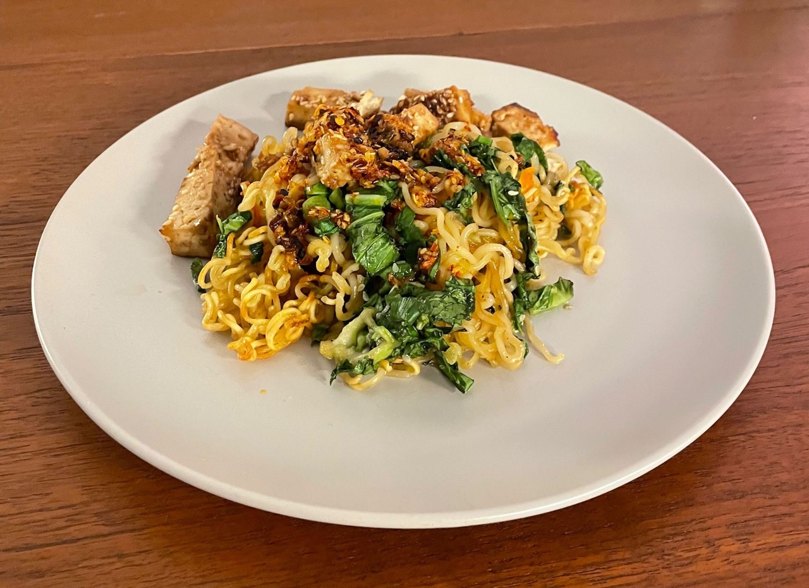

Tofu with Crispy Noodles
Wednesday 15, March 2023
This is a great, easy meal to make that scales well.
Yield: 2 servings 
Ingredients¶
- 2 packs of instant ramen
- 2 tablespoons vegetable (or other neutral) oil
- 1 tablespoon sesame oil
- 1/2 block of tofu
- 1 cup Baby bok choy, julienned
- 1/2 cup Cilantro
- 2 green onions, sliced
Marinade¶
- 2 tablespoons hoisin sauce
- 1 tablespoon sesame oil
- 2-3 cloves garlic
- 1 tablespoon sesame seeds
- 1/2 tablespoon soy sauce
Prep¶
- Preheat oven to 425F
- Grease a large sheet pan
- Press and drain half a block of tofu, slice into strips 1cm x 1cm
- Prepare two packages of instant ramen according to directions. Drain and set aside when done
- Combine the ingredients for the marinade in a medium bowl. Coat tofu in marinade and place on the prepared sheet pan. Do not clean the marinade bowl
- Coat the prepared ramen noodles in vegetable and sesame oils. Then spread out on the sheet pan, the more surface area covered, the crispier they will be
- Cook tofu and noodles at 425F for 14 minutes
- Meanwhile cut vegetables and coat in the remaining marinade, add to pan after timer stops. Broil for 4 minutes
- Serve with chili oil